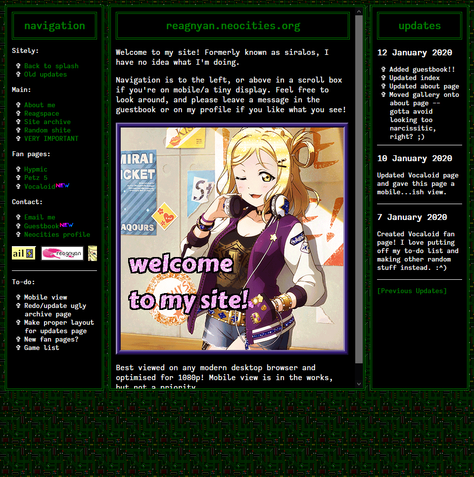
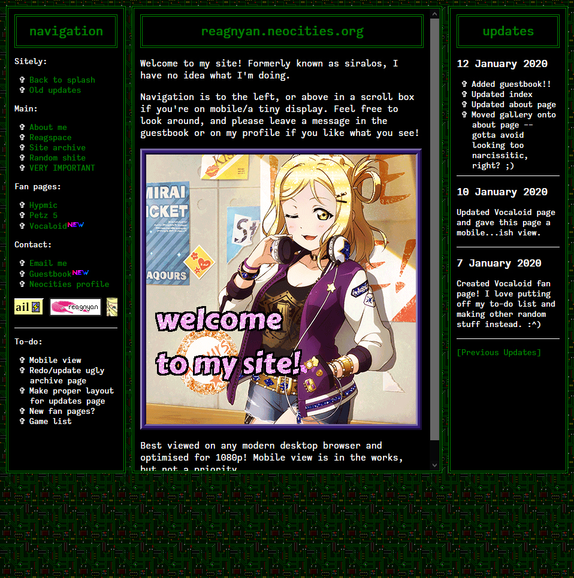

site archive
Last update: 10 January 2021 (images are kind of wack atm but I’ll fix them eventually)
In the past, I’ve previously used neocities primarily for my twitter bio/about pages. However, recently I’ve started trying to make it more into a website to make it more fun to work with and view.
I like to save screenshots (and files if I have them) of my previous layouts so I can look back. Unfortunately I don’t have all the previous revisions saved, but I do have the most recent ones!
website
I’ve only recently gotten to using this Neocities as a proper… site, so not a lot to look back on so far. Previously, feargarden has generally been used as more more of a formal website and thus has a bit more history in this regard.
 

splash page
In late August 2019, I decided to make a splash page as it allowed me something else to customise for the main site.
The first one was made bc I like tacky site designs in a way, but I can’t stand them for my actual site layout. So I decided to compromise by making my landing page tacky as hell. Since then, I’ve been toning it down a bit.

about/bio pages
Before I got heavily into working with HTML/CSS I used to use premade themes (mostly from Tumblr), but at some point I decided to push myself to create my own pages as well. Everything shown here is something I’ve created myself (with varying degrees of success or cutting corners).
Early 2017
These were some of my first original attempts that made heavy use of frames.
Mid 2017
This was styled after the site Listography, which was popular for user bios on Twitter at the time.
July 2018
Pretty sure this was the only one that ever relied on Javascript. Despite that, it’s a personal favourite of mine.
May 2019
Styled after classic Neopets. Another favourite of mine.
Summer 2019
Lots of experimenting with simple layouts. These ones made use of CSS tabs as opposed to using JS. The resource I used is bit dated (from 2003), but hey, it still works.
August 2019
Did away tabs and unncessary info and just decided to stick to the basics.